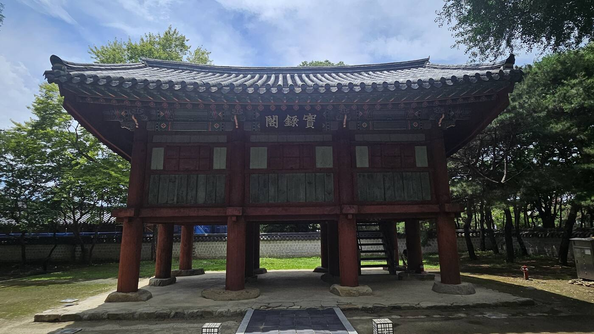
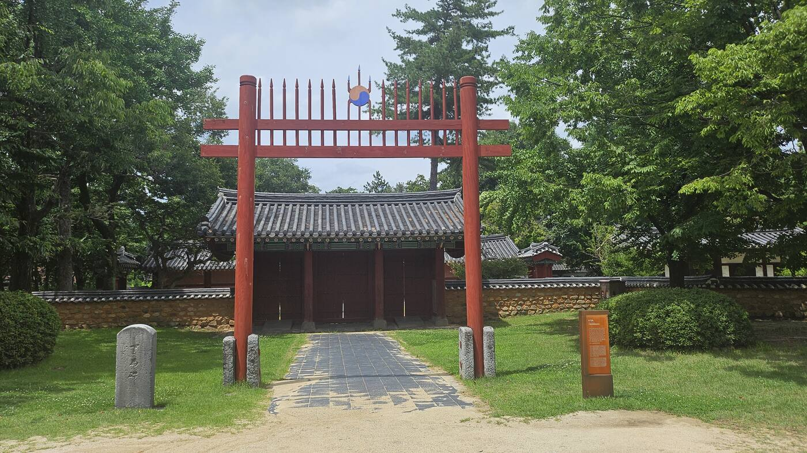
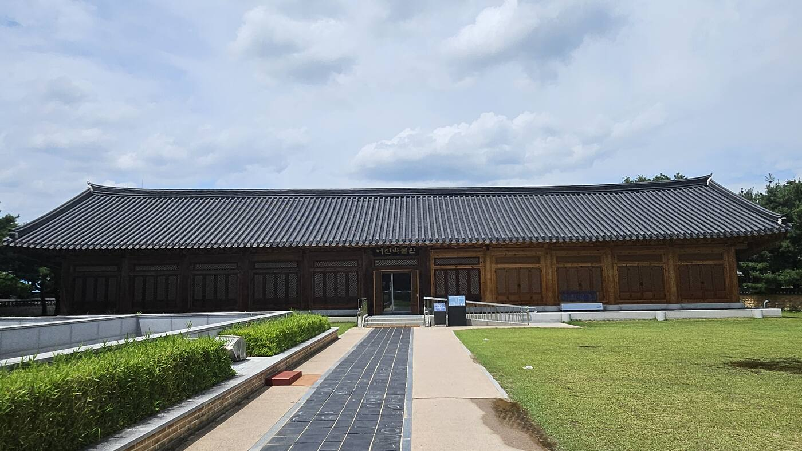
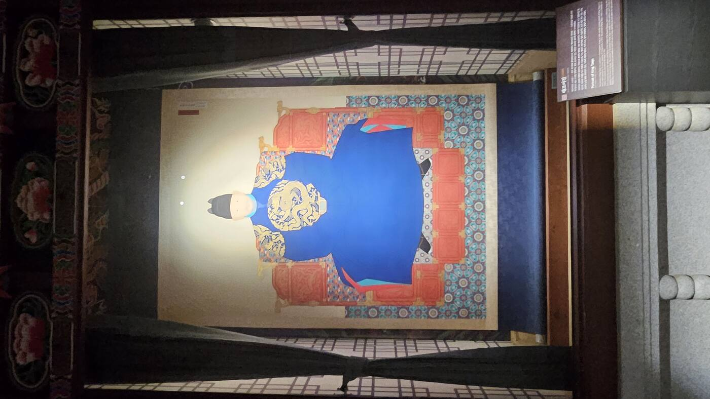
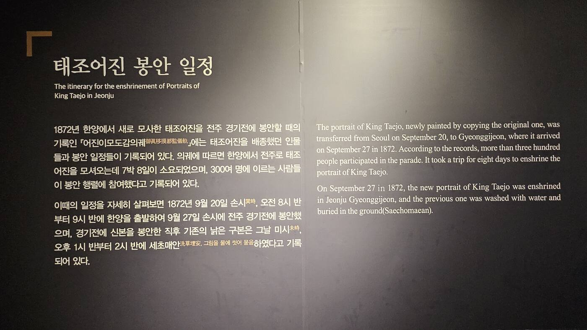
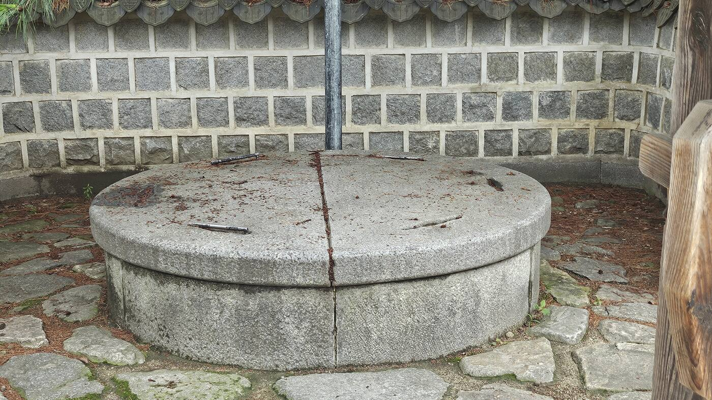

황산에서 이성계는 왜구를 이겼다. 오목대에서 그는 야심을 드러냈다. 그리고 1408년, 그는 죽었다. 이 시리즈의 마지막 답사지인 경기전은 이성계 자신의 이야기가 아니다 — 그가 죽은 지 겨우 2년 뒤, 그의 아들 태종이 아버지의 얼굴을 전주에 세운 이야기다. 정도전을 죽이고 신덕왕후 세력을 무너뜨린 바로 그 아들이, 어째서 아버지만은 더 크게 만들었을까. 태조 서사는 여기서 완성된다 — 그것도 태조 자신이 아니라, 그를 딛고 왕이 된 아들의 손으로.
"태종이 아버지를 기리려고 지었다"는 절반의 설명이다
경기전을 이야기할 때 흔히 "태종이 아버지를 기리기 위해 지었다"고 설명한다. 틀린 말은 아니다. 다만 그렇게만 말하면 이 공간이 세워진 진짜 이유, 그러니까 태종이라는 정치인이 어떤 계산 위에서 이 결정을 내렸는지가 지워진다.
먼저 시기부터 짚어야 한다. 경기전은 1410년(태종 10)에 창건됐다. 그 직전 2년의 흐름을 나란히 놓으면 이렇다.
즉 경기전은 왕자의 난과 신덕왕후 세력에 대한 정리가 사실상 마무리된 직후에 세워졌다. 그리고 하필 전주였다. 전주는 전주 이씨의 본관이자 조상의 고향, 왕조가 일어난 발상지였다 — 오목대에서 이미 확인했듯 목조 이안사가 살던 땅이고, 이성계 자신도 황산대첩 개선길에 들러 잔치를 벌였던 곳이다. 경기전은 그러니까 '왕조의 뿌리'를 상징하는 자리에 세워진 셈이다.
종묘가 있는데, 왜 굳이 또 얼굴을 모셨을까
여기서 의문이 하나 남는다. 한양 종묘에는 이미 태조의 신주가 모셔져 있었다. 그런데도 태종은 전주에 따로 태조의 얼굴, 즉 어진을 봉안했다. 신주와 어진은 같은 사람을 모시지만 역할이 다르다.
종묘가 왕실 내부에서 조상을 제사 지내는 자리라면, 경기전은 지방의 백성들까지 왕의 얼굴을 직접 보고 기억하게 만드는 자리다. 정통성은 궁궐 안에서만 확인하는 게 아니라, 왕조의 발상지에서 국가 전체가 확인해야 하는 것이었다.
정도전은 죽였고, 아버지는 더 크게 만들었다
태종의 정치를 되짚어 보면 이 결정이 더 선명해진다. 그는 정도전을 제거했고, 이복동생 방석을 죽였고, 신덕왕후 세력을 무너뜨렸다. 왕위에 오르기까지 그가 지운 사람은 한둘이 아니었다.
그런데 단 한 사람, 아버지 태조의 정통성만은 절대로 흔들 수 없었다. 이유는 간단하다 — 태종 자신의 왕위도 결국 태조에게서 나온 것이었기 때문이다. 아버지의 정통성이 흔들리면 그 정통성 위에 서 있는 자신의 왕위도 함께 흔들린다. 그래서 그는 정적이 된 사람은 지우되, 왕조의 창업자만은 오히려 더 크게 만드는 방식을 택했다. 종묘의 격을 다지고, 경기전을 세우고, 건원릉의 제향을 정비한 것이 모두 이 시기에 겹쳐 있는 이유다.
전주는 왕조가 시작된 자리다. 그 자리에 태조의 얼굴을 모신다는 건 "왕조의 정통성은 태조에게 있고, 그 태조를 이어받은 사람이 바로 나(태종)다"라는 선언과 같다. 사람들을 지운 자리를, 아버지를 더 크게 세우는 방식으로 채운 것 — 그것이 경기전이 세워진 진짜 이유다.
전국 네 곳의 사고 중, 딱 하나만 살아남았다
경기전 경내에는 조선왕조실록을 보관하던 전주사고(全州史庫)와 실록각(實錄閣)이 있다. 조선은 한양 춘추관 외에 충주·성주·전주 세 곳에 사고를 더 두어 실록을 나누어 보관했는데, 1592년 임진왜란이 터지자 춘추관·충주·성주 사고의 실록이 모두 불타 없어졌다. 오직 전주사고의 실록만 병화를 면했다.

그 실록이 살아남은 건 우연이 아니라 손홍록과 안의라는 두 선비의 판단 때문이었다. 이들은 전란이 전주까지 번지기 전에 실록을 내장산 용굴암으로 옮겨 1년 가까이 직접 지켰다. 이때 지켜낸 실록 784건 514책, 그리고 기타 전적 64종 556책이 오늘날 국보 조선왕조실록의 뿌리가 됐고, 1997년 유네스코 세계기록유산으로 지정됐다. 1597년 정유재란 때 실록각 건물 자체는 결국 불탔지만, 실록은 이미 다른 곳에 있었기에 무사했다. 지금의 전주사고는 1991년 발굴조사를 거쳐 복원한 건물이다.
조경묘 — 이성계도 몰랐을 21대조의 자리

경기전 북쪽에는 조경묘(肇慶廟)라는 별도의 사당이 있다. '조경'은 '조선 왕조 창업의 경사가 시작되다'라는 뜻이다. 이곳에 모신 이한은 이성계의 21대조로, 전주 이씨의 시조다. 정작 조경묘 자체는 이성계가 세운 게 아니라 훨씬 뒤인 1771년(영조 47) 경기전 옆에 세워졌고, 위패 글씨는 영조가 세손 시절의 정조에게 쓰게 했다.
경기전이 이성계 한 사람의 얼굴을 모신 자리라면, 조경묘는 그 얼굴이 나온 뿌리, 그러니까 이성계 자신도 만나본 적 없는 21대 위의 조상을 모신 자리다. 전주라는 도시 하나에 조선 왕실의 시작점(조경묘)과 그 왕조를 연 사람의 얼굴(경기전)이 함께 놓여 있는 셈이다.
스물일곱 왕 중, 온전히 전해지는 얼굴은 셋뿐이다

조선 왕들은 대부분 생전에 자신의 초상화를 제작했다. 기록상 태조의 초상화만도 26축에 이르렀다고 전해질 만큼, 왕조 초기부터 어진 제작과 봉안 체계는 꽤 촘촘했다. 그런데 그렇게 많이 그려진 어진들 중, 태조부터 순종까지 27대 임금의 초상화 가운데 현재 원형으로 남아있는 것은 태조·영조·철종, 단 셋뿐이다. 나머지는 여러 전란으로 소실됐고, 특히 한국전쟁 때 부산으로 옮겨졌던 어진들이 1954년 화재로 상당수 불에 탔다.
경기전 태조어진은 온전한 모습으로 전해지는 유일한 왕의 초상이다.
— 어진박물관 안내문, 「조선왕실의 어진」
이 방에는 세종·정조·고종·순종의 '어진'도 나란히 걸려 있지만, 성격이 다르다. 세종과 정조의 얼굴은 아예 남아있는 초상이 없어 후대 화가가 기록과 후손의 골격을 참고해 새로 그린 표준영정이고, 고종과 순종은 남아있는 사진을 바탕으로 모사한 그림이다. 태조의 얼굴만이, 대대로 옛 어진을 그대로 옮겨 그린 계보를 통해 지금까지 이어져 왔다.
이 얼굴 하나를 지키려고, 다섯 번을 옮겨 도망쳤다
태조어진이 지금 자리에 가만히 앉아있게 된 건 최근의 일이다. 조선시대 내내 이 그림은 전쟁과 재해가 터질 때마다 짐이 되어 실려 나갔다.
전쟁이 날 때마다 사람이 아니라 그림 한 장을 먼저 안전한 곳으로 피신시켰다는 사실은, 이 초상화가 단순한 미술품이 아니라 왕조의 정통성 그 자체로 취급됐다는 뜻이다. 이성계라는 사람은 1408년에 죽었지만, 그의 얼굴은 그 후로도 400년 넘게 전란이 날 때마다 실제로 옮겨 다녀야 했다.
300명이 8일을 걸어 옮긴 그림 한 장
지금 경기전에 있는 태조어진은 1872년(고종 9)에 새로 모사한 것이다. 기존 어진이 오래되어 색이 희미해지자, 경복궁 태원전에서 영희전본을 바탕으로 축소해 새로 그렸다. 그해 9월 20일 손시(오전 8시 반~9시 반)에 한양을 출발한 행렬은 정확히 7박 8일을 걸어 9월 27일 손시에 전주 경기전에 새 어진을 봉안했다. 「어진이모도감의궤」에는 이 봉안 행렬에 300여 명이 참여했다고 기록돼 있다.

그림을 옮기는 데는 전용 가마가 따로 있었다. 어진 자체를 모시는 가마는 신연(神輦), 향로와 향합을 옮기는 데는 향정(香亭)을 썼다 — 조경묘 쪽에는 시조 이한의 위패를 옮기는 채여(彩輿)가 따로 있었다. 이 가마들의 실물은 지금 어진박물관에 전시돼 있다.
그러고는 백자 항아리에 담겨 경기전 북쪽 계단 아래 묻혔다.
얼굴을 새로 들이는 일과 옛 얼굴을 땅에 묻는 일이, 같은 하루 안에서 이루어졌다.
전쟁도 견딘 자리가, 식민지 시대엔 통째로 헐렸다
임진왜란도, 병자호란도, 동학농민혁명도 피해간 경기전이었지만 일제강점기는 피하지 못했다. 1907년부터 1911년까지 경기전 정면을 두르던 전주부성 성곽이 모두 철거됐다. 1919년에는 경기전 서쪽 부속채를 헐고 그 자리에 일본인 소학교(광복 후 전주중앙국민학교)를 세웠다. 경기전 동쪽, 옛 전주사고가 불탄 자리에 임시로 어진을 모시던 별전마저 1937년 헐렸다. 이로써 경기전은 정전 영역만 겨우 남고 나머지는 모두 사라졌다.
광복 이후에도 수난은 이어졌다. 1963년에는 헐린 별전 자리에 전라북도박물관(1976년 전주시립박물관으로 개칭)이 들어섰고, 경기전 내삼문과 외삼문 사이 마당은 석물과 탑을 늘어놓은 야외 전시장으로 쓰였다 — 제사를 지내는 자리가 관람용 공간으로 바뀐 것이다.
회복은 1990년대 들어 시작됐다. 1990년 경기전 정문이 다시 세워졌고, 1991년 전주시립박물관을 철거한 자리를 발굴해 전주사고를 복원했다. 1995~97년 경기전 북쪽에 남아있던 초등학교 건물을 철거·이전했고, 2002년부터 본격적인 복원 공사가 시작돼 2004년 지금의 모습을 되찾았다.
어정(御井) — 정몽주가 마신 우물과는 다른 우물

경기전 경내에는 어정(御井)이라는 우물이 있다. 어정은 임금의 음식을 짓거나 마실 물을 긷던 우물, 또는 종묘·사직단처럼 임금이 직접 참여하는 제례에 쓰이던 우물을 통틀어 부르는 말이다. 태조 이성계의 영정을 모셨던 경주의 집경전, 평양의 영숭전, 그리고 이곳 전주의 경기전 우물도 모두 어정이라 불렸다. 성스럽게 취급해야 했으므로 대개 담을 두르고 문을 달아 두었다.
이 시리즈의 두 번째 답사지였던 오목대에서, 정몽주가 잔치 자리를 뛰쳐나가다 목이 말라 물을 청했다는 우물을 다룬 적이 있다. 그 우물과 이 어정은 서로 다른 우물이다 — 오목대 쪽 우물은 정몽주 개인의 일화에서 이름을 얻은 곳이고, 이 어정은 경기전이라는 왕실 제례 공간에 딸린 격이 다른 시설이다. 이름이 비슷하게 들릴 수 있어 분명히 구분해 둔다.
이성계의 이야기가 아니라, 이성계를 완성시킨 이야기
황산에서 시작한 이 시리즈는 여기, 경기전에서 끝난다. 남원 황산에서 왜구를 무너뜨린 한 장수가, 전주 오목대에서 처음으로 자기 안의 야심을 노래로 흘렸고, 그 야심은 결국 조선이라는 나라가 되었다. 그런데 정작 이 시리즈의 마지막 장을 쓴 건 이성계 자신이 아니었다. 그가 죽은 지 2년 만에, 정도전을 죽이고 신덕왕후 세력을 무너뜨리며 왕위에 오른 아들이 아버지의 얼굴을 전주에 세우기로 결정했다.
태종에게 아버지의 정통성은 손댈 수 없는 유일한 영역이었다 — 자신의 왕위 자체가 거기서 나왔기 때문이다. 그래서 그는 정적은 지우고, 창업자는 키웠다. 경기전은 그 계산이 만들어낸 결과물이다. 이 시리즈가 열 편에 걸쳐 따라온 건 결국 이성계 한 사람의 무용담이 아니라, 그 무용담이 어떻게 한 국가의 정통성으로 완성되어 갔는가 하는 이야기였다. 그리고 그 완성을 마무리 지은 건, 아버지가 아니라 아들이었다.
오목대에서 그는 야심을 드러냈다.
그리고 경기전에서, 그는 아들의 손에 의해 비로소 왕조의 뿌리가 되었다.
열 곳을 걸어 도착한 이 마지막 자리에서, 이야기는 여기서 접는다.
영웅의 길, 그 끝에서
황산에서 시작된 한 사람의 이름이, 경기전에 이르러 비로소 완성되었다. 나라를 세운 사람도, 결국 한 장의 초상으로 남았다. 그렇게 영웅의 길이 끝난다.
- 위치
- 전북 전주시 완산구 태조로 44 (풍남동, 전주 한옥마을 인근)
- 지정
- 사적 · 경기전
- 구성
- 경기전 정전(태조어진 봉안) · 전주사고 · 실록각 · 조경묘 · 어진박물관 · 어정
- 가는 길
- 전주 한옥마을 관광안내소에서 도보 접근 가능
- 함께 보면 좋은 곳
- 오목대(이 시리즈 2부, 도보 연계 가능), 전주 한옥마을